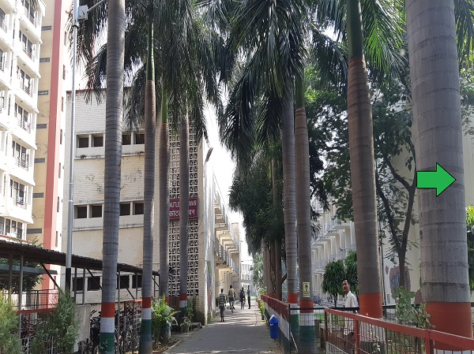

|

|
About
Sir Proby Thomas Cautley (1802 -1871), English engineer and paleontologist, the then Superintendent-General of Canals, is known for conceiving and supervising the construction of the 350 miles (560 km) Ganges canal during East India Company rule in India. At the time of completion, it had the greatest discharge of any irrigation canal in the world. Named after such an eminent technocrat, The Cautley Bhawan is one of the oldest blocks on the campus of IIT, Roorkee since when it was famous as the University of Roorkee. The foundation stone was laid in the year 1958 by Mr Hafiz Muhammad Ibrahim, the then Union Minister of Irrigation and Power.
Initially known as the Diploma Students' Hostel, the present building, a little different in appearance then, was inaugurated by Shri L.P. Misra, Dr. Engg., Roorkee (Honorary), an alumnus of the erstwhile University of Roorkee (batch 1911) on November the 26th, 1959.
The Bhawan has housed academicians and eminent engineers and scientists since its inception. It is currently progressing under the visionary leadership of Dr. J.K.Nayak as its present Chief Warden. Dr. nayak currently holds the position of Assistant Professor in the Department of Management Studies.
|